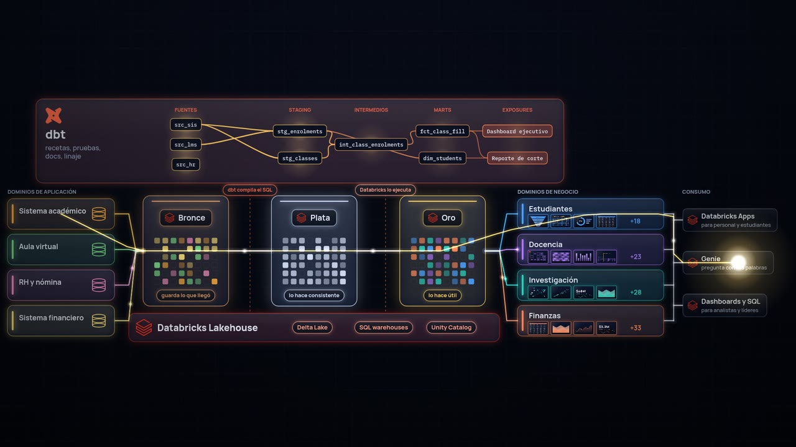

Learning Data
Cómo se mueven de verdad los datos, y por qué importa el significado
Explicaciones cortas y visuales de las plataformas de datos modernas: lo bastante claras para quien empieza, y lo bastante rigurosas para ingenieros de datos. Empezamos con una inscripción en una universidad ficticia y la seguimos hasta una decisión.

▶ Ver la película · 7 minLa vida interior de los datos
Una película de siete minutos con narración, música y sonido. Muestra cómo se capturan los datos en los sistemas donde nacen, cómo se refinan en bronce, plata y oro con dbt sobre Databricks, cómo adquieren significado gracias a un modelo conceptual compartido, y cómo se comparten sin hacer copias.
Capítulos
Cómo se hizo: un viaje de aprendizaje
Cómo la película pasó de una pregunta sobre analogías a una película terminada y narrada en dos días, hecha en conversación con Claude, un modelo de IA de Anthropic. La historia cuenta lo que exploramos, lo que discutimos, lo que salió mal y lo que aprendimos.
Exploramos
Ríos, bibliotecas, tuberías y el cuerpo humano; cuatro tableros de estilo; y por qué ganó la luz que lleva imágenes.
Discutimos
Cómo funciona de verdad cada componente: eventos, zero-copy, capas y pruebas de dbt, productos de datos y exposures.
Cuestionamos
Precisión, diseño y errores simples, desde "no hay una luz mejor que otra" hasta mosaicos que parecían servilletas.
Aprendimos
Trece lecciones para explicar plataformas de datos y para crear contenido multimedia como código.
Próximamente
Rutas de aprendizaje
Recorridos guiados por las ideas de la película, un tema a la vez.